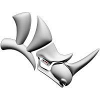
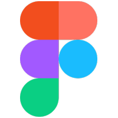

About
Stop motion director, 2D animator and hybrid film maker based in Sydney, Australia.
My Vision
Hi, I am Tony.
Having graduated both a Bachelor of Design in Architecture and a Bachelor of Animation Production at UTS, I gained valuable skills to lead and create stunning visuals.
After learning design in architecture, I fell in love with stop-motion animation. The ability to create physical sets and dream-like environments that come alive wakes the child-like wonder that I always felt missing in much commercial animation.
Animation has always been magical to me.
Now, I want to create the same magic I felt as a kid.
Striving to create worlds of wonder through the use of multiple mediums
while pushing the boundaries of visual storytelling.
Tools & Craft

Rhinoceros 3D
FigmaGet in touch
Have a project, collaboration, or just want to say hi? Send a message below or reach out directly.
Tony Chen